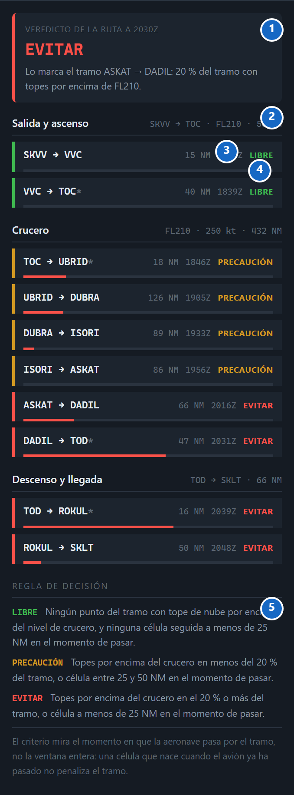
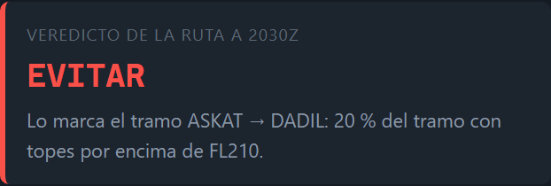
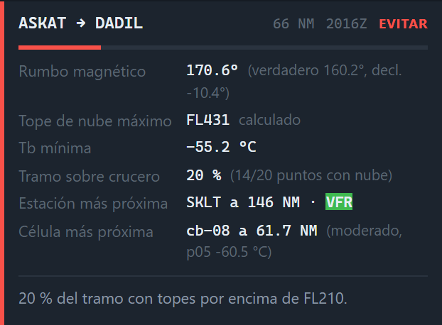
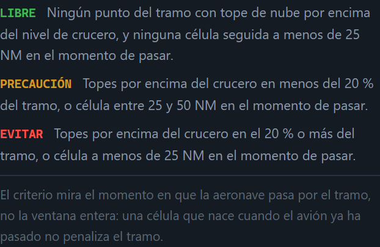
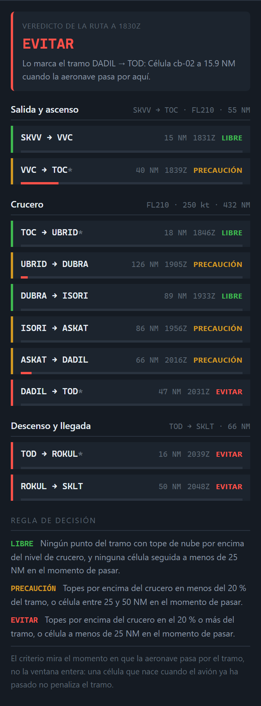
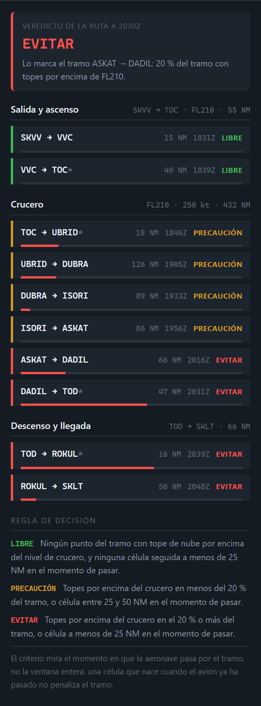

Si solo se retiene una cosa de esta guía, que sea esta.
El resto del visor pone los datos uno al lado del otro y deja al espectador la tarea de cruzarlos. La pestaña Tramos los cruza y se moja: divide las 553 NM en los diez tramos reales entre puntos publicados y le pone a cada uno una etiqueta —LIBRE, PRECAUCIÓN o EVITAR— con el motivo escrito al lado.
Eso es lo que la hace defendible: el veredicto no es una opinión, es una regla declarada aplicada a unos números. La regla está escrita al pie de la propia pestaña, a la vista de quien escucha. Quien no esté de acuerdo puede discutir el criterio, que es exactamente como se discute un análisis.
Y es la pieza que contesta la pregunta del trabajo con una frase corta: no «hay convección en la Amazonía», sino «el tramo DADIL → TOD hay que evitarlo, y este es el número por el que lo digo».
Cada tramo se puede desplegar con un clic para ver sus cifras, y al hacerlo la barra de tiempo salta a la hora estimada de paso por ese tramo: el visor entero se pone en el momento del que se está hablando.
De arriba abajo: la conclusión primero, el criterio al final.

| Elemento | Qué es | |
|---|---|---|
| 1 | Veredicto de la ruta | La conclusión de toda la pestaña en una palabra, con la hora a la que se ha calculado y el tramo que la marca. |
| 2 | Fases de vuelo | Los tramos agrupados en salida y ascenso, crucero, y descenso y llegada, con las millas de cada fase. |
| 3 | Fila de tramo | Un tramo entre dos puntos publicados: distancia, hora estimada de paso y su veredicto. |
| 4 | Barra roja | Qué porcentaje del tramo tiene topes de nube por encima del nivel de crucero. Es la medida, en forma de barra. |
| 5 | Regla de decisión | El criterio, escrito en la propia interfaz. No está en un anexo: está donde se ve. |
Que la regla esté impresa en la pantalla es una decisión de diseño, no un adorno. Un veredicto sin criterio visible es una opinión con tipografía bonita.
Una palabra, y el tramo concreto que la provoca.

El veredicto de la ruta es el del peor tramo. No es un promedio ni una votación: una ruta con nueve tramos libres y uno que hay que evitar es una ruta que hay que replantear, y un promedio escondería justo eso.
Debajo aparece qué tramo lo marca y por qué. En la captura: «Lo marca el tramo ASKAT → DADIL: 20 % del tramo con topes por encima de FL210». Esa frase es la respuesta completa a «¿por qué dices que hay que evitarla?».
La etiqueta de arriba recuerda a qué hora se ha calculado. Es importante decirlo en voz alta: el veredicto es de un instante, y una parte de él cambia al mover la barra de tiempo. El apartado 10 explica qué parte cambia y cuál no.
Por qué los tramos se agrupan así y qué significan los asteriscos.
Los diez tramos se reparten en tres fases según dónde cae su punto medio: antes del TOC es ascenso, después del TOD es descenso, y lo de en medio es crucero. Con esta ruta salen 55 NM de ascenso, 432 de crucero y 66 de descenso.
La fase importa porque cambia lo que significa un tope de nube. En crucero, a FL210, un tope en FL195 se sobrevuela. En descenso, ese mismo tope está justo donde el avión va a estar. El agrupamiento evita leer las tres fases con el mismo rasero.
El asterisco de VVC → TOC*: marca un tramo cuyo extremo es un punto
calculado, no publicado en la carta. El TOC y el TOD no son waypoints
aeronáuticos: son el resultado de aplicar el perfil de ascenso y descenso del ATR a
esta ruta. Señalarlo es la diferencia entre citar una carta y presentar un cálculo
propio.
La cabecera de cada fase repite el dato que la define —el nivel en ascenso, el nivel y la velocidad en crucero— para no tener que recordarlo de memoria mientras se expone.
Cuatro datos y una barra, en una línea.
| Elemento | Qué dice |
|---|---|
| SKVV → VVC | Los dos puntos publicados que lo delimitan. Con * si alguno es calculado (TOC o TOD). |
| 15 NM | Longitud real del tramo, sobre las coordenadas de los waypoints. |
| 1831Z | Hora estimada de paso por el punto medio del tramo, repartiendo las 553 NM entre la salida (1830Z) y la ETA (2055Z). |
| LIBRE / PRECAUCIÓN / EVITAR | El veredicto del tramo, con su color. |
| Barra roja | Porcentaje del tramo con topes por encima del nivel de crucero. Vacía significa cero, no «sin datos». |
La hora de paso es la clave de toda la pestaña. Es lo que permite decir que una célula «está a 16 NM cuando pasamos por aquí» en vez de «está a 16 NM de la ruta». Una célula que nace a las 2140Z sobre el tramo de salida no penaliza ese tramo: el avión pasó por allí tres horas antes.
Al pulsar una fila se despliega su detalle y la barra de tiempo salta a esa hora, de modo que el mapa, la imagen satelital y el EFB quedan en el mismo instante del que habla la fila. Es la forma natural de encadenar la exposición.
Lo que hay debajo de cada fila cuando se despliega.

| Campo | Qué es |
|---|---|
| Rumbo magnético | Del plan de vuelo, con el verdadero y la declinación al lado. Es lo que obliga a nivel impar y por tanto a FL210. |
| Tope de nube máximo | El tope más alto estimado dentro del tramo. Va rotulado «calculado»: sale de la temperatura, no de una medida de altura. |
| Tb mínima | La temperatura de brillo más baja del tramo. Si no hay nube, lo dice: «sin nube detectada». |
| Tramo sobre crucero | El porcentaje de la barra. Entre paréntesis, cuántos de los puntos muestreados tienen nube. |
| Estación más próxima | El aeródromo del caso más cercano al punto medio, su distancia y su categoría a la hora de paso. |
| Célula más próxima | La célula seguida cuyo encuentro con el vuelo cae en este tramo, con su distancia, severidad y percentil 5. |
| Lecturas ambiguas | Solo aparece si las hay: cuántos puntos del tramo no dieron lectura concluyente. |
Cuidado con el paréntesis, que es donde más se tropieza: en la captura, «20 % (14/20 puntos con nube)» quiere decir que el tramo tiene 20 puntos muestreados, de los cuales 14 tienen nube, y que el 20 % del tramo —4 de esos 20 puntos— tiene el tope por encima de FL210. El porcentaje y el paréntesis miden cosas distintas.
Tres niveles, dos criterios, y un matiz temporal que hay que saber defender.

Cada tramo se juzga con dos criterios en paralelo, y manda el peor de los dos: cuánta parte del tramo tiene topes por encima del nivel, y a qué distancia pasa la célula más próxima en el momento de pasar.
El 20 % no es arbitrario, pero sí es una decisión de este trabajo: por debajo de esa proporción el tramo tiene topes altos aislados, que se rodean; a partir de ahí la obstrucción es continua y rodearla ya no es un quiebro, es replantear el tramo.
Los 25 y 50 NM son los mismos umbrales que usa el EFB para sus alertas, a propósito: un tramo marcado EVITAR por célula se corresponde con la alerta roja que la tripulación vería en ese punto del vuelo. Las dos pantallas no se contradicen porque comparten criterio.
El matiz que está escrito al pie y conviene decir en voz alta: el criterio mira el momento en que la aeronave pasa por el tramo, no la ventana entera. Una célula que nace cuando el avión ya ha pasado no penaliza el tramo. Sin ese matiz, cualquier ruta sobre la Amazonía en una tarde de septiembre saldría EVITAR de punta a punta, y el análisis no distinguiría nada.
El recorrido completo del dato, por si preguntan.
Por qué esto importa para la exposición: cada paso es citable y cada número tiene un origen. Si preguntan «¿cómo sabes que es el 20 %?», la respuesta no es «lo calcula el programa», es «de los 20 puntos que el muestreo deja en ese tramo, 4 tienen el tope por encima de FL210».
Cinco frases, moviendo la barra entre 1830Z y 2030Z.


Decir los límites antes de que los pregunten es lo que sostiene el resto.
1. No todo el veredicto cambia con la barra de tiempo. La fracción de topes sobre crucero se recalcula con el cuadro de la hora cargada, pero el criterio de células usa el encuentro calculado para todo el vuelo, que no depende de la hora que se esté mirando. Por eso a 1830Z la ruta ya aparece EVITAR. No es un error: es que el encuentro con cb-02 está previsto pase lo que pase, y el análisis lo dice desde el principio.
2. La «estación más próxima» puede estar muy lejos. Se elige entre los seis aeródromos del caso, no entre todas las estaciones del país. En el tramo ASKAT → DADIL la más próxima es SKLT a 146 NM: su categoría describe Leticia, no el tramo. Es contexto, no una observación del tramo.
3. Los tramos cortos se miden con pocos puntos. Con 170 muestras en 553 NM, un tramo de 15 NM se juzga con unos 5 puntos: su porcentaje solo puede ser 0, 20, 40… No hay más resolución que esa, y conviene no leer esos porcentajes como si fueran finos.
4. El tope es calculado, no medido. Igual que en el corte vertical: la altura sale de la temperatura con un gradiente térmico tipo, sin radiosondeo que lo verifique ese día. Por eso el campo lleva la palabra «calculado» impresa al lado.
5. El veredicto no es una autorización. LIBRE no significa «se puede volar»: significa que con estos dos criterios y estos datos no se ha encontrado obstrucción. No entra ni en performance, ni en combustible, ni en NOTAM, ni en el estado del aeródromo.
La frase que cierra: la pestaña Tramos no sustituye al despacho de vuelo. Aporta lo que el despacho no tiene sobre la Amazonía: una evaluación continua de las 553 NM, tramo a tramo y a la hora en que se va a pasar por cada uno, en un corredor donde las estaciones de superficie están a más de cien millas unas de otras.